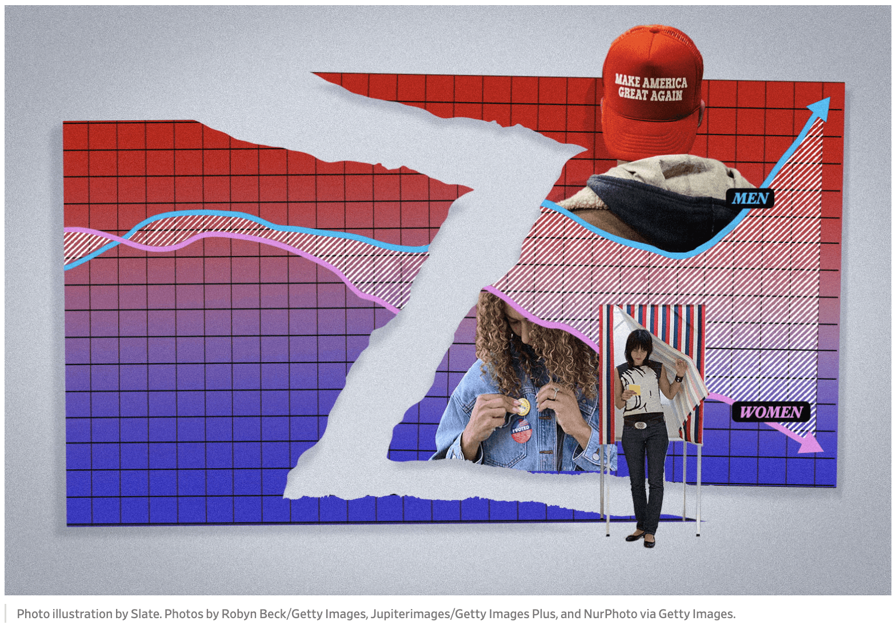
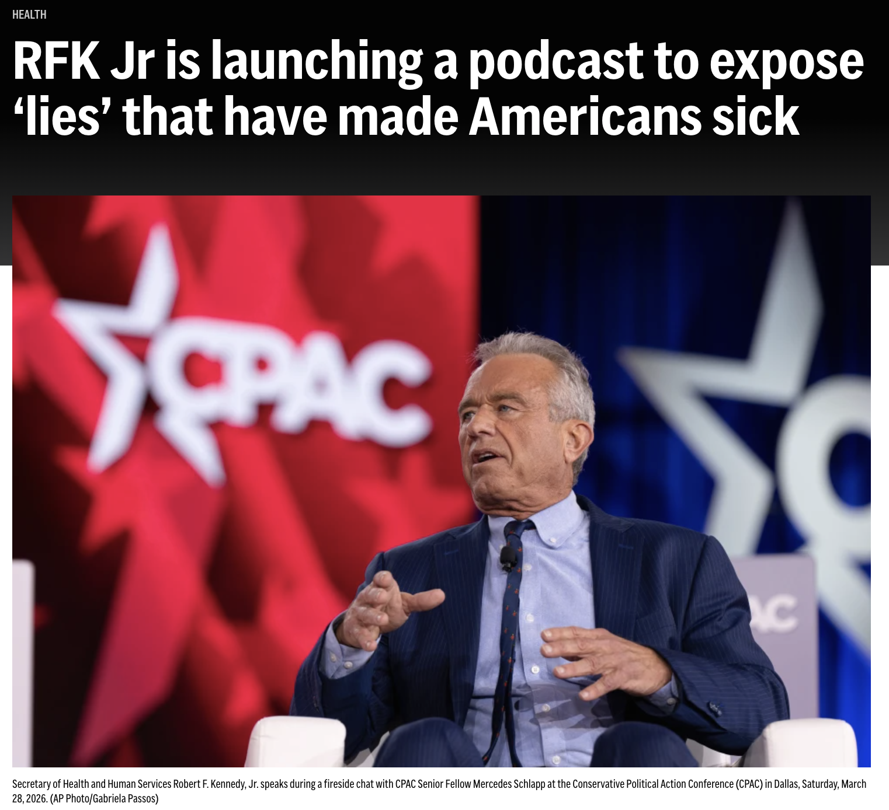

selected appearances.
I am available for media commentary and public writing on political psychology, social media, gender and politics, the podcast ecosystem, and American political behavior. Please get in touch for inquiries.
Written Pieces

Slate Magazine · Jan 2026
Gen Z Is More Progressive Than Millennials, Except in One Crucial Way
Read ↗
Good Authority · Dec 17, 2025
The Joe Rogan of the left, right, and center is just … Joe Rogan
Read ↗
Mentions

AP News · 2026
RFK Jr is launching a podcast to expose 'lies' that have made Americans sick
Read ↗
Podcasts
2025